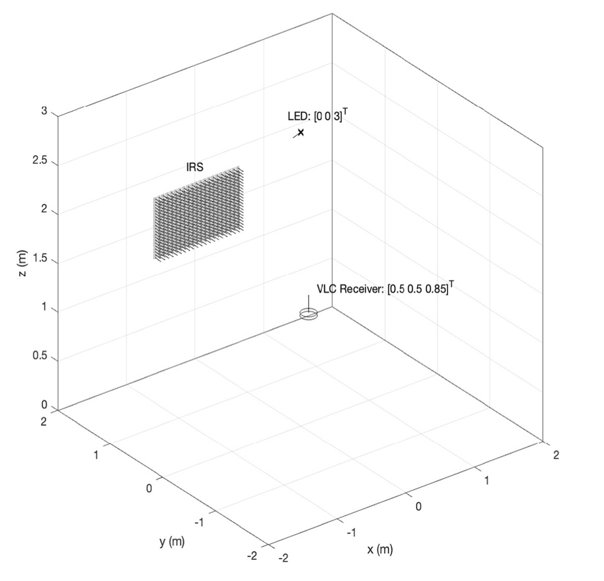

|
Efe Tarhan I am a Master’s student in Communication Systems at EPFL, supported by the Excellence Scholarship. My research interests are computer vision, foundational models, and 3D scene understanding. I am currently working in the Visual Intelligence and Learning Lab (VILAB) directed by Prof. Amir Zamir, under the supervision of Kunal Pratap Singh. Earlier, I worked in the Biomedical Imaging Group with Prof. Michaël Unser on multiresolution optimization and in the Image and Visual Representation Lab (IVRL) with Prof. Sabine Süstrunk on 3D scene editing. Before EPFL, I completed my B.Sc. in Electrical and Electronics Engineering at Bilkent University. During that time, I conducted research on visible light positioning under the supervision of Prof. Sinan Gezici for 2 years. |

|
ResearchI have previous research experience in computer vision and detection and estimation problems. Currently I am interested in foundational models, multimodal data, 3D scene understanding, and diffusion models. |
|

|
IRS Aided Visible Light Positioning with a Single LED Transmitter
Efe Tarhan, Furkan Kökdoğan, Sinan Gezici Digital Signal Processing, 156, 2025 repository / paper A CRLB-based optimization technique of intelligent reflective surfaces for device localization using a single LED transmitter in indoor environments. |

|
A Multiresolution Framework for Ptychography
Efe Tarhan, Jonathan Dong, Vincent P. L. Guillemet Research Project, Biomedical Imaging Group, 2025 project page / report A multiresolution scheme that uses B-splines for improving the performance of the iterative engine of ptychography inverse phase retrieval problem. |

|
From Pixels to Wireframes: 3D Reconstruction via CLIP-Based Sketch
Abstraction
Efe Tarhan, Filip Mikovíny, Eylül İpçi, Alberts Reisons Course Project, 2025 project page / presentation Optimizing Bézier curves with constrained Gaussian splatting extends sketch abstraction from 2D to 3D. By restricting Gaussians to matte spherical blobs along curve paths, our method produces structured wireframe-like sketches that compactly capture object geometry. |
|
|
Large-Scale 3D Scene Relighting using Pre-Trained Diffusion Models
Efe Tarhan, Dongqing Wang, Research Project, Image and Visual Representation Lab ,2025 project page / report This NeRF editing framework performs localized relighting and texture edits with pretrained diffusion models while preserving geometry. Wavelet-based gradient filtering and surface normal prediction ensure high-fidelity edits with consistent reflections and appearance. |
|
The source code of this website has been taken from here. |